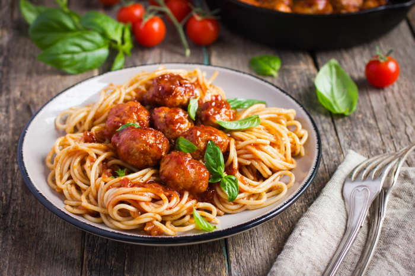

<div class="profile-container">
  <div class="profile-header">
    

    <div class="profile-image">
      <div class="avatar-container">
        
        <div class="avatar-border"></div>
      </div>
      <h2>Jonh Doe</h2>
    </div>

    <div class="action-buttons">
      <button class="action-btn">
        <i class="fas fa-cog"></i>
        <span>Settings</span>
      </button>
      <button class="action-btn edit">
        <i class="fas fa-pencil-alt"></i>
        <span>Preferences</span>
      </button>
      <button class="action-btn">
        <i class="fas fa-shield-alt"></i>
        <span>Security</span>
      </button>
    </div>
  </div>

  <div class="logbook-section">
    <h3>My logbook</h3>
    <div class="food-items">
      <div class="food-item">
        
        <div class="food-details">
          <h4>Gourmet Burger</h4>
          <div class="rating">
            <span class="stars">★★★★☆</span>
            <span class="score">4.7</span>
          </div>
        </div>
      </div>
      <div class="food-item">
        
        <div class="food-details">
          <h4>Pasta Box</h4>
          <div class="rating">
            <span class="stars">★★★★☆</span>
            <span class="score">4.2</span>
          </div>
        </div>
      </div>
    </div>
  </div>

  <nav class="bottom-nav">
    <a href="#" class="nav-item active"><i class="fas fa-home"></i></a>
    <a href="#" class="nav-item"><i class="fas fa-star"></i></a>
    <a href="#" class="nav-item"><i class="fas fa-users"></i></a>
    <a href="#" class="nav-item"><i class="fas fa-user"></i></a>
  </nav>
</div>
